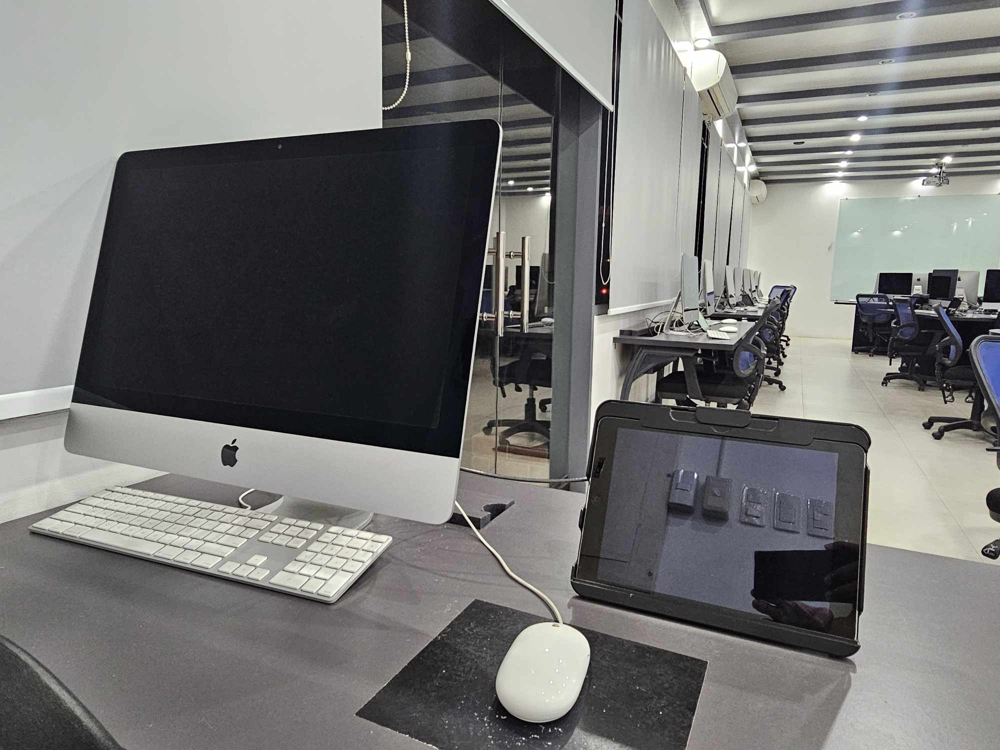
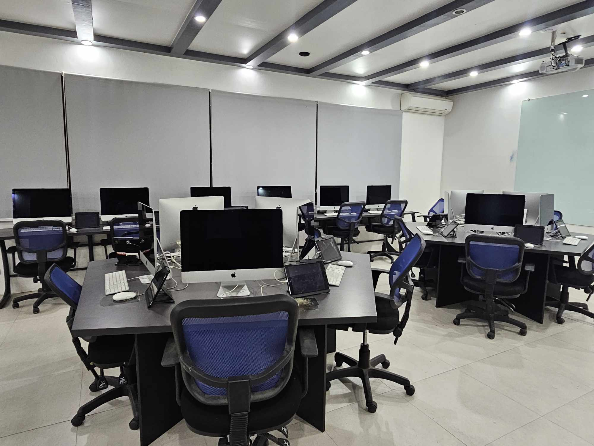
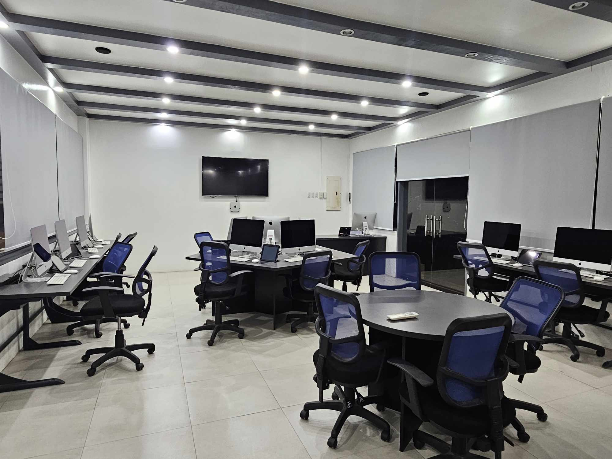
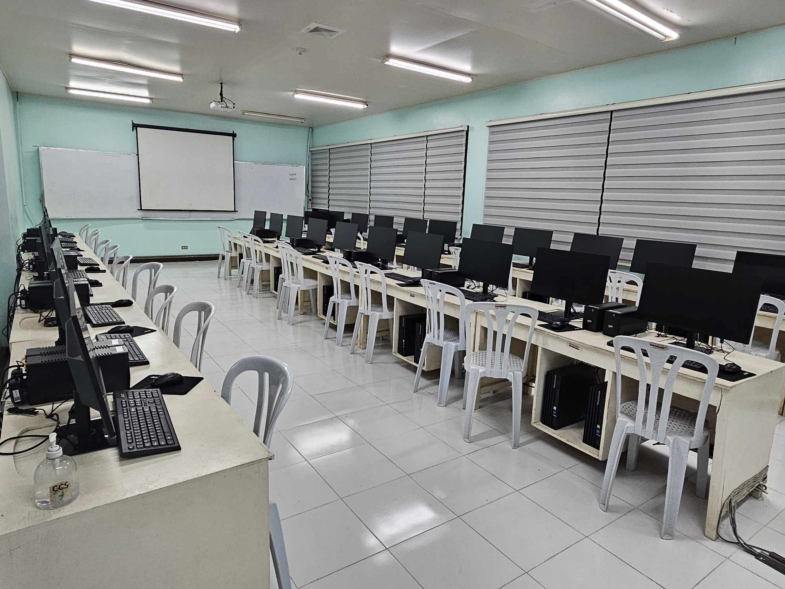
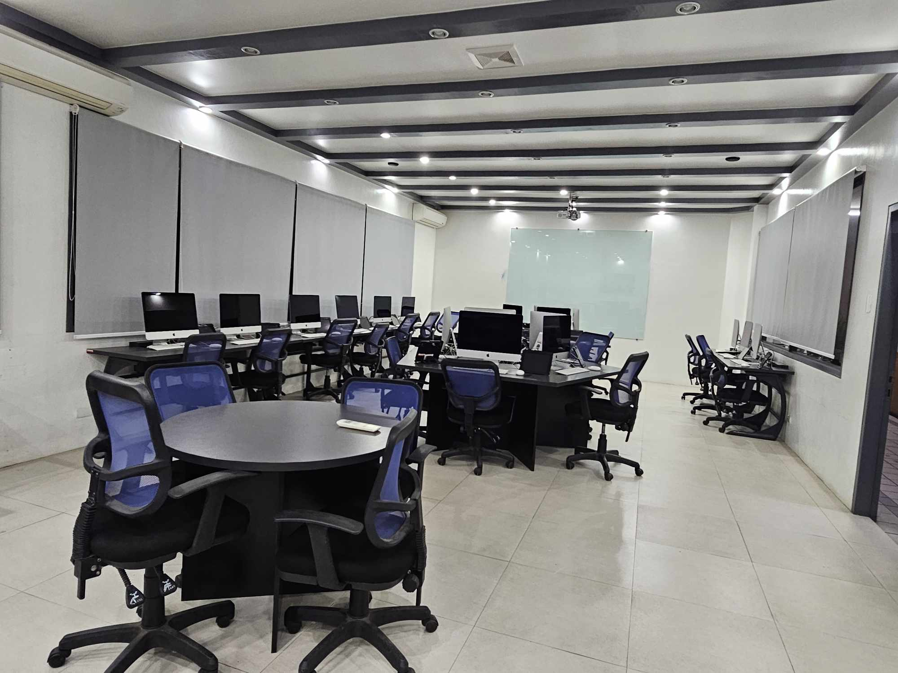
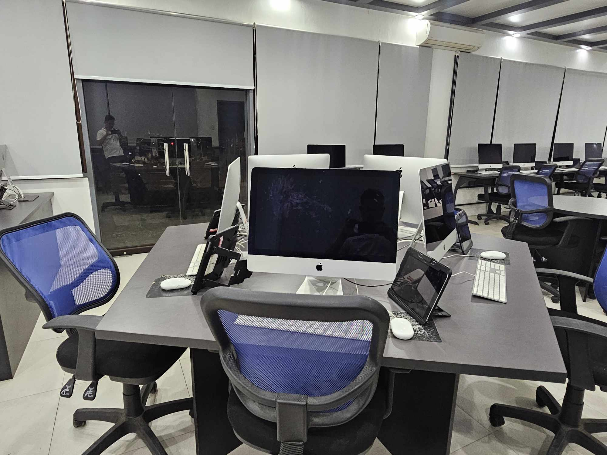

.png)
Home Developer Faculty and Staff College Policies Contact Us
HISTORY OF THE COLLEGE OF COMPUTER STUDIES In November 1988, the Silliman University Computer Center (SUCC) was established with the objective of centralizing computer degree offerings of the University. Engr. Alfredo T. Ang was the appointed head of this unit. Originally, the center serviced the computer non-IT degrees as well as short courses. These short courses were open to all interested members of the community. In 1992, services were expanded to include the computer degree (Bachelor of Science in Business Computer Application), a degree offering of the College of Business Administration (CBA). In June 1994, the Computer Center moved to the newly completed Uytengsu Foundation Computer Center Building, which was later renamed Uytengsu Foundation Computer Center (UFCC). In 1999, the UFCC's services were further expanded to include the second computer degree offering of CBA, Bachelor of Science in Information Technology. In line with the Commission on Higher Education's thrust to control the number of Information Technology Education degrees and to centralize its offering within the institution, Silliman University created the College of Information Technology and Computer Sciences. The College became fully operational in June 2001, with Engr. Ang as its Acting Dean. The first degree offerings were the Bachelor of Science in Information Technology (BSIT) and Bachelor of Science in Computer Science (BSCS). In the following year, the College offered the Bachelor of Science in Information Management (BSIM), now known as the Bachelor of Science in Information Systems (BSIS) program.
Vission A leading Christian institution in information and computing and a center of excellence in research and education in Southeast Asia. Mission Offer information and computing programs that provide concrete theoretical, ethical, spiritual and experim- ental grounds for research, internships and multi- disciplinary programs; •Conduct research for development and societal progress; •Foster graduates to possess leadership skills and social consciousness; •Provide professional expertise in partnerships with industries, educational institutions and organizations to improve quality of life.
Goals College of Computer Studies The College aims to have: • Curricula that meets international st- Bachelor of Library and Information Science andards; Years of Study: 4 • Research agenda responsive to societal needs; Bachelor of Science in Computer Science • Active participation in collaborative Years of Study: 4 bi-lateral research presentation and publication; Bachelor of Science in Information Systems • Intensive internship and project depl- Years of Study: 4 oyment programs; • Active involvement in extra and co Bachelor of Science in Information Technology curricular activities; Years of Study: 4 • Strong partnerships and linkages amon- g private and public organizations; • Competent faculty and staff; • State-of-the-art learning facilities; • Active community extension and servic- e learning programs;
  
  
Credits to Sir Kim Faburada.
Developed by: Jan Agar A. Barotilla © 2024